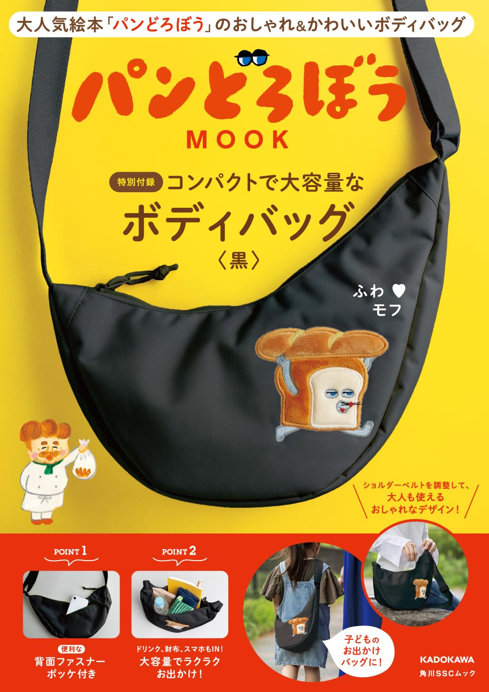

パンどろぼう MOOK
コンパクトで大容量なボディバッグ〈黒〉
大人氣繪本《パンどろぼう》的 MOOK 特別付錄，推出黑色輕便ボディバッグ。低調黑色搭配パンどろぼう刺繡，親子外出、日常散步、旅行小物收納都很實用。
✔ 黑色包身，較適合日常穿搭與親子共用
✔ 包面有パンどろぼう角色刺繡，低調但有辨識度
✔ 主打「コンパクトで大容量」，適合放手機、錢包、飲料與外出小物

這本 MOOK 的選物重點
這款不是單純收藏型付錄，而是偏向「可以實際帶出門」的親子外出小包。黑色包款比鮮豔角色包更容易搭配大人服裝，小朋友使用也不會過度幼稚，適合想找日常實用款的家庭。
01｜親子都能用
肩帶可調整，能配合大人或孩子的身形使用，外出時可當輕便斜背包。
02｜容量感實用
封面示意可放入手機、飲料、錢包等外出物品，適合短程出門。
03｜背面拉鍊口袋
背面有拉鍊收納口袋，可放較常取用或想分開收納的小物。
開箱影片
想確認包款大小、實際背起來的比例與收納感，可以先看短影音開箱。
影片來源：TikTok 使用者公開影片連結
適合什麼樣的家庭？
如果家中已經喜歡《パンどろぼう》，這款 MOOK 的吸引力會比一般無角色包更高；但即使不是重度粉絲，黑色包身與小尺寸斜背設計也有實用性。它比較適合當作親子短程外出包、孩子自己的小包，或媽媽外出時放手機與小物的輕便包。
選物誌觀點：
這類日本 MOOK 的價值通常不只在書本本身，而是「角色人氣＋實用付錄＋限定感」。若作為台灣電商商品，主圖與介紹頁應清楚呈現包款尺寸感、容量、實背比例與收納細節，能降低消費者對付錄包品質與大小的疑慮。
這類日本 MOOK 的價值通常不只在書本本身，而是「角色人氣＋實用付錄＋限定感」。若作為台灣電商商品，主圖與介紹頁應清楚呈現包款尺寸感、容量、實背比例與收納細節，能降低消費者對付錄包品質與大小的疑慮。
商品資訊
| 日文書名 | パンどろぼう MOOK 特別付録 コンパクトで大容量なボディバッグ〈黒〉 |
|---|---|
| 出版社 | KADOKAWA／角川SSCムック |
| 付錄內容 | 黑色ボディバッグ |
| 設計特色 | パンどろぼう刺繡、背面拉鍊口袋、可調式肩帶 |
| 使用情境 | 親子外出、孩子外出包、散步、旅行小物收納、日常斜背包 |
| 備註 | 本頁依商品封面資訊與公開開箱影片整理；實際尺寸、材質與出版資訊請以出版社或商品實物標示為準。 |
購買前小提醒
MOOK 付錄包通常重點在造型、輕便與收藏實用性，不建議用一般專櫃包的承重或耐磨標準期待。若是送禮或自用，建議確認包款大小、開口方式、肩帶長度與孩子實際使用情境是否符合需求。